Your work. Your page. Your audience.
Install Core, set up your public page, publish a work, and choose how to get paid. Follow the steps for your setup; your progress stays in this browser.
Which setup are you following?
Choose your path. You can change it later; check Core for your live status.
Install and open Core
Put Certifyd Core on the computer that will hold your work.
What to click: Choose your computer below, then use Get Certifyd Core Beta 20. Open the installed Certifyd Core app.
It worked when: Core opens your dashboard in a browser. Your desktop icon, tray, or menu-bar control can open it again.
Create the first owner
Make your private owner account the first time Core opens.
What to click: On Sign in, choose New here? and complete Create owner. If this computer already has your Core account, sign in instead. Keep any recovery key Core shows in a safe place.
It worked when: You can sign in and see your dashboard. Your account and published work stay with this Core installation during upgrades.
Dashboard does not open automatically?
On the Core computer, open http://127.0.0.1:4000 in your browser. This private dashboard address is different from the public creator page you will share later.
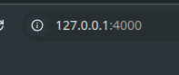
Add your Lightning Address
Add a receiving address if you want visitors to tip you. A Lightning Address looks like an email address, for example name@wallet.example.
What to click: In Profile → Integrations, paste a Lightning Address from a wallet you control and choose Save payout settings. Never enter your wallet password or recovery words.
It worked when: Core says Saved. This alone does not enable priced works or connect a payment provider. In Basic, your first published work stays free and solo.
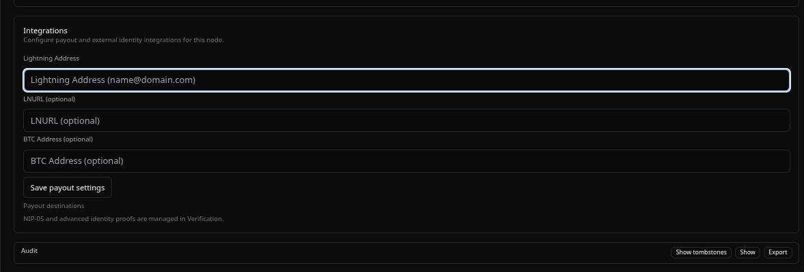
Start a temporary public link
A temporary link lets people visit your page while Core is running. It can change later. Core keeps sharing off until you give permission.
What to click: In Core, open Configuration → Public Connection. Select Temporary, then choose Enable sharing. Selecting Temporary alone does not publish your page.
It worked when: Core shows Connection: Temporary, a public address, and Sharing: Online. If it says Connecting or Unverified, wait or open Advanced / Diagnostics; do not assume visitors can reach the page yet. Use Open public profile to see the visitor view.
Use Stop sharing when you want the public page offline. An existing, authorized temporary-link setting may return on later launches; check the status in Core.
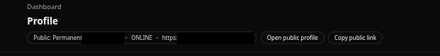
Make your profile yours
Give visitors a name and a short introduction.
What to click: In Core, choose Profile, then find Public Profile (Presentation). Enter your Display name and Bio, and save them. You can add an approximate location or wallpaper later.
It worked when: Your name and bio remain after you reopen Profile. They will appear on your public page once you enable sharing.
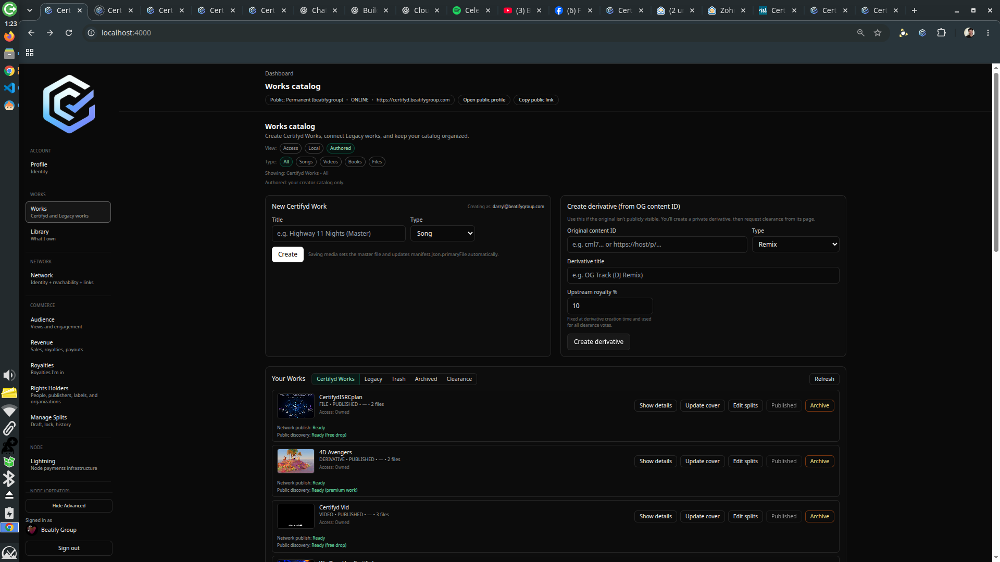
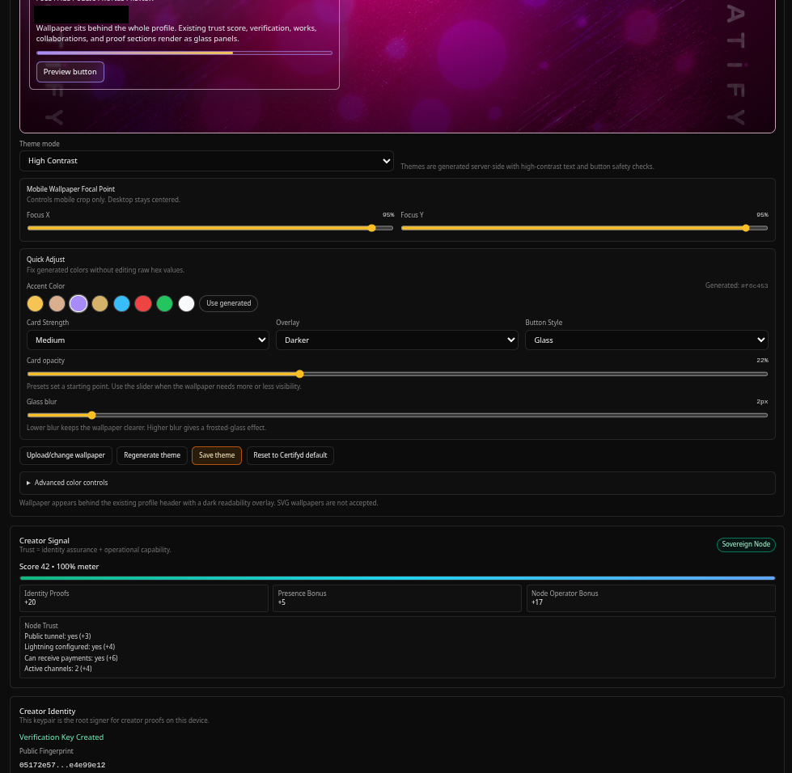
Add a profile picture
Add an image that helps people recognize you.
What to click: In Profile → Public Profile (Presentation), find Profile image and choose Upload image. Select an image up to 2 MB.
It worked when: Your image appears in the small round preview. You can use Clear image to change it later.
Create your first proof
Optionally show that an outside account belongs to you. You can publish a first work without doing this.
What to click: In Profile → Verification Proofs → Creator Platforms, choose Add / Verify platform. Pick a platform and follow the exact text and placement Core gives you. Then choose Verify Social Proof.
It worked when: Core marks that account verified. If the other site has not updated yet, leave the proof in place and try again later.
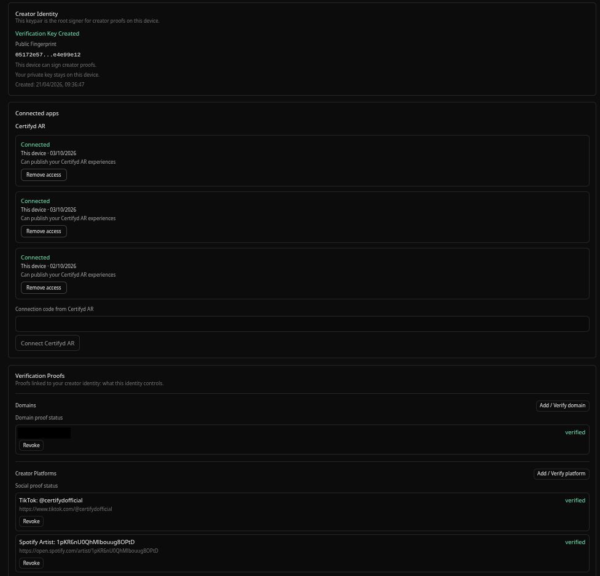
Add your first work
Start a draft for the song, video, book, image, or other file you want to share.
What to click: Open Works → New Certifyd Work, enter a title, choose the matching type, and choose Create. Find the draft under Your Works → Certifyd Works.
It worked when: Your draft appears in Your Works. A draft is still private until you publish it.
Finish your work’s details
Add the file and the details people need to understand your work.
What to click: On your draft in Works, choose Save media for the file and Save cover for its artwork. Open Show details to set delivery and any optional topic, credits, or existing industry code.
It worked when: Show details displays the saved media and cover. In Basic, keep the work free and solo. For a paid work, finish payment setup and check Core's readiness before publishing.
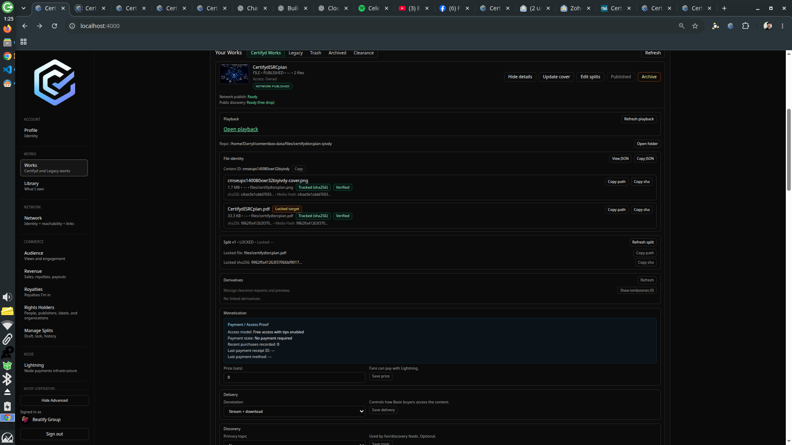
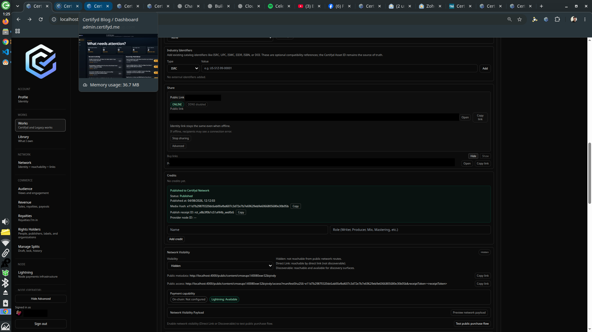
What is the Works tab?
Works is where you create and manage your work. Use Certifyd Works for drafts, files, details, and published releases. Legacy is for work you already have on another platform, once your permanent address and source account proof are ready.
Under Your Works → Certifyd Works, press Show details on a work. You can review its files, playback, and settings. After publishing, Share → Public Link gives you a link to that work. Your profile link is at the top of Core.
Connecting work from another platform does not automatically prove that you own its rights.
What is Rights Holders?
Rights Holders currently contains Connect Work. Use it to add a reference to work you already have on another platform.
- Set up your permanent address first. A temporary link does not unlock this feature.
- Verify the account on the platform where the work lives.
- Open Rights Holders → Connect Work. Paste a Spotify, Apple Music, or YouTube link, or use an existing code such as ISRC.
- Press Discover and check the details Core finds. If Core confirms the requirements, press Connect.
This adds a separate “Legacy” reference to your Works. Verifying a platform account does not establish copyright ownership.
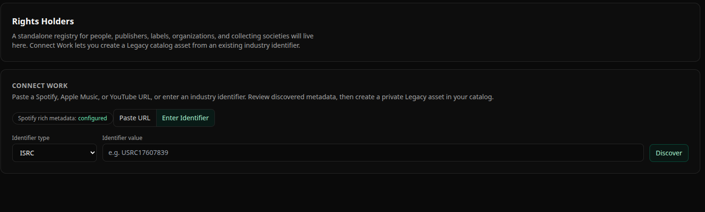
What is Library?
Library is the view of works you can access. It includes your authored work, purchases, and work shared through splits or derivatives. Use Type to see Songs, Videos, Books, or Files, and Relationship → Authored Work to narrow the view to work you created.
When a work’s split is locked and the owner publishes the work from Works, it appears in the accepted split participants’ Libraries. Those participants can then share the work to their own profiles.
Use Works to manage what you create and Library to find what you can access. A work in your Library was not necessarily created by you. For your first publication, follow Find your published work in Library.
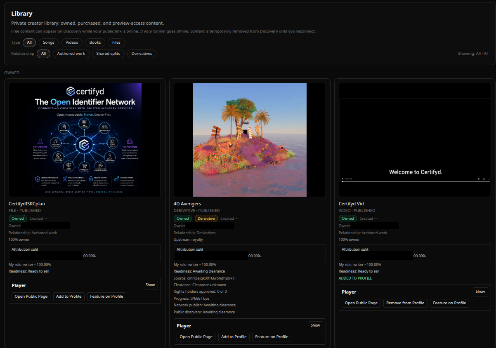
What is the Network tab?
Network is Core’s overview of your public identity and how this setup connects to the wider network. It is more than a connection check. Read the Network Summary first: it separates Identity (your creator profile), Reachability (whether a public route is available), Payment (what payment rails are ready), Participation, the authority for your storefront and commerce, and Visibility.
- Check Mode Summary and the cards beneath it to see what this setup is ready to do. Reachability shows the public address and route; Discoverability describes whether network discovery can see content.
- Under User Network Status, read Network Status, Status message, Suggested action, and Publish readiness. These are more useful than a single “online” label.
- If payments are part of your setup, inspect Payment Capability and Creator Payout Destination. Check the configured payout address and readiness before relying on paid sales. The payout fields and provider information depend on your mode.
- Further down, Runtime shows whether Core is running and whether its endpoint is stable. Node Presence, Network Services, and Provider Configuration describe this machine’s node role and services when applicable.
These images show an already configured Sovereign Node. Basic and Sovereign Creator screens will report their own mode and available capabilities. A reachable public link alone does not mean payments are ready.
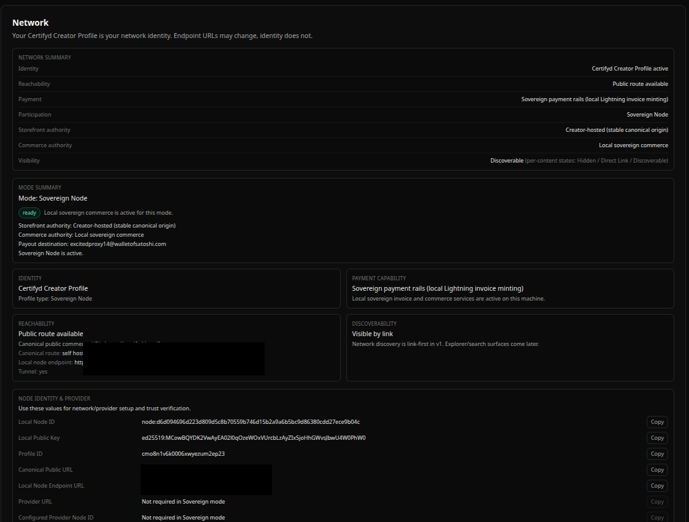
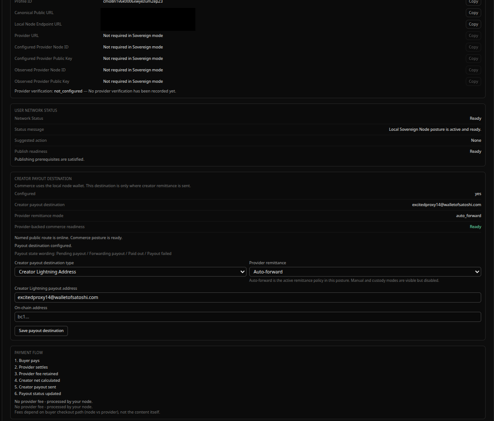
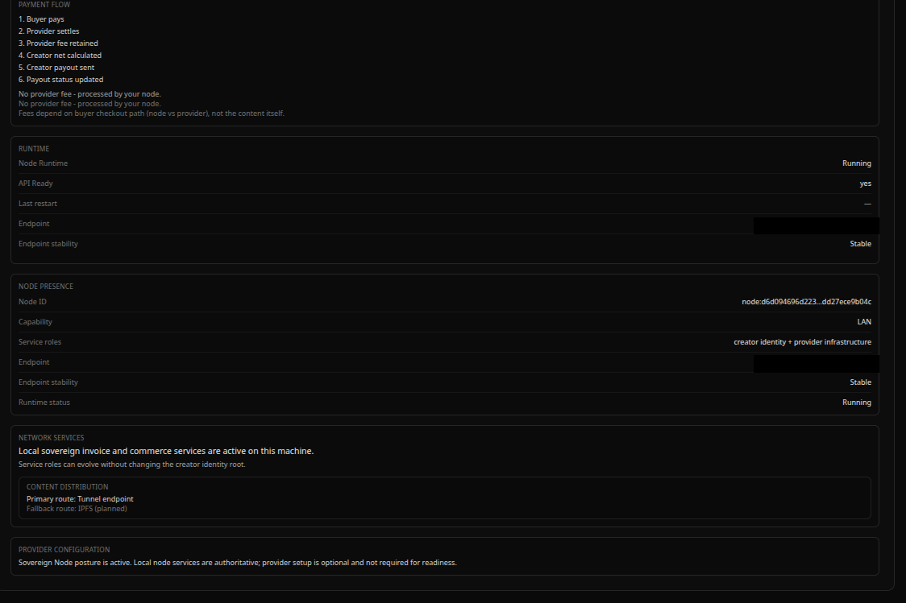
Set up a permanent address
A permanent connection gives your page an address on a domain you own. It stays the same across restarts. You can keep your existing profile and works while setting it up.
What to click: In Configuration → Public Connection, select Permanent. Core looks for a matching connection. When your domain is configured and Core offers it, choose Enable sharing to give permission. Selecting Permanent or connecting an outside service alone does not make your page public.
It worked when: Core shows Connection: Permanent, your domain as the public address, and Sharing: Online. A connected Cloudflare service by itself does not prove that visitors can reach your page.
Recommended Cloudflare setup: For a permanent address, install cloudflared, then choose Install as a service in Cloudflare’s tunnel setup. This keeps the connector running independently of Core. Run tunnel (manual) is for temporary testing, not the recommended always-on setup. Core still requires you to select Enable sharing before your page goes public.
If Core says the connection is unavailable, use the optional setup guide. It helps with a new domain or an existing Cloudflare service. Core discovers supported services automatically; you do not need to enter an executable path for normal setup.
Connect a payment provider node
To charge for work as a Sovereign Creator, connect a payment provider after your permanent public address is online.
What to click: On the Certifyd Network map, choose a provider and copy its details. In Core, open Network → Provider Configuration, enter those details, choose Save provider, then Connect provider.
It worked when: Core reports the provider ready. Then set a price in Works → Show details → Monetization and check the work's publish readiness. A public address alone does not enable payments.
What is Lightning?
This step is for Sovereign Node operators using their own local Bitcoin and Lightning (LND) services. Other creators can use a payment provider instead.
What to click: Check local Bitcoin readiness in Node, then open Node → Lightning. Use Auto-detect if available, choose Test, and save only after Core reports the service ready.
It worked when: Core shows both local payment services ready. Keep connection credentials in Core only; never paste them into this guide.
What is Provider Console?
Provider Console is for operators offering payment services to other creators. It shows the creators served by the node, fees, sales, payouts, and node health.
Core shows this tab only when the node has the required operator setup. Most creators do not need it.
Show the advanced menu
- At the bottom of Core’s left menu, press Show Advanced.
- Look for extra items such as Configuration and Diagnostics.
- If an item is unavailable, Core will say what it needs. Showing the menu does not set up payments or splits.
Core may already show this menu for some setups.
What is Configuration?
Use this page to see your actual public connection and change sharing only when you choose to.
What to click: Open Configuration → Public Connection. Choose Temporary or Permanent to inspect that path. Choose Enable sharing only when you want your creator page public.
It worked when: Connection, Public address, and Sharing show the active result. For extra checks, open Advanced / Diagnostics.
Optional API connections: Spotify and Cloudflare Analytics
In Configuration, the optional Spotify metadata provider and Cloudflare Analytics connection are separate from your public connection. Neither is needed to run Core.
To add Cloudflare traffic and geography:
- In Cloudflare, open My Profile → API Tokens → Create Token. Create a custom token limited to your zone with Zone → Analytics → Read. For optional Web Analytics referrers, also allow Account → Account Analytics → Read for the relevant account. Copy the token once and keep it private.
- On your domain's Cloudflare overview, copy its Zone ID. In Core, open Configuration → Cloudflare Analytics (optional). Enter that Zone ID, the exact creator hostname, and the token. Add the Account ID only if you want available Web Analytics referrers.
- Choose Connect, then Refresh aggregates. Open Audience → Traffic & Geography to see available reports.
It worked when: Configuration shows a connected status and a last-refresh time, and Audience shows available Cloudflare reports. If your zone or token lacks a dataset, native Audience remains available.
Use Cloudflare's token instructions if its dashboard labels differ. Enter the token only in your local Core, never in this guide or a public form.
Technical addresses
The private dashboard/API uses 127.0.0.1:4000. The public creator pages use 127.0.0.1:4010. Never point your public domain at the private dashboard.
What is Diagnostics?
Use diagnostics only if Core cannot verify your public page or a service is not ready.
What to click: Open Node (Operator) → Diagnostics, then choose Check tunnel health. If you need help, use Copy report from the relevant check. Keep backups and private connection details to yourself.
It worked when: Core reports your public creator address reachable. A connected service and a reachable public page are different checks.
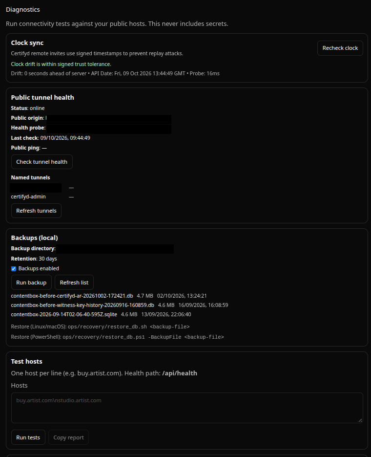
Edit a split (if sharing)
A split says who shares in a work and what percentage each person gets. Basic creators cannot create or accept a shared split. Both you and the people you invite need the required permanent identity and setup. Core checks this for each person. Start with your draft in Works; Manage Splits lists published works.
- In Works → Your Works → Certifyd Works, find the draft and press Edit splits.
- Press Add participant for each person. Enter their creator ID or email, their role, and their percentage. Include your own share. Intended total must be 100%.
- Press Save. Core creates invites. Open Split Invites, copy each link or token, and send it to the right person yourself.
- Wait for everyone to accept. Check that Active total is 100% with no required invite pending, then press Lock. Core saves a tamper-evident record of the agreed split.
- Finish the work details and publish it. The accepted participants will see the published work in their Library and can share it to their profiles. To change a locked split later, create a new version.
If Edit splits is unavailable, read the reason Core shows. Show Advanced does not remove these requirements.
Publish your first work
Make the finished work available to others.
What to click: On the work card in Works, choose Publish. Follow any readiness message Core shows. If you are sharing income with collaborators, complete and lock the split first.
It worked when: Core marks the work published. Open Show details → Share → Public Link to check the visitor page. Publishing does not automatically place the work on your creator profile.
Find your published work in Library
Find your new release and decide whether it appears on your creator profile.
What to click: Open Library and find the work under Owned. On its card, choose Add to Profile to show it publicly. Feature on Profile is optional.
It worked when: The card says ADDED TO PROFILE and the work appears after you choose Open public profile. Remove from Profile hides it from the profile without deleting your published work.
Why are some Commerce tools unavailable?
In Basic, you can create a profile, prove an identity, make a solo work, share a temporary link, and see Buy-page views in Audience. Paid-purchase reporting and the Revenue, Royalties, Rights Holders, and Manage Splits tools need Sovereign setup.
For a permanent address and payments, choose Sovereign Creator above. You will need a domain and a payment provider, and Core will check the rest. Choose Sovereign Node if you run Bitcoin and Lightning services for other creators.
Read the Audience tab
See how people reach your work. Core records Buy-page views for Basic and Sovereign creators; paid purchases and an indicative view-to-purchase ratio appear when commerce is available.
What to click: Open Audience. Choose Last 7 days, Last 30 days, Last 90 days, or All time. Use Refresh for the latest report. Select Export all Audience data and CSV or JSON when you want one file with every owned work and available history.
It worked when: You see your recorded views and a per-work list, or an accurate zero if no views occurred during a covered period. A coverage warning means Core cannot confirm all earlier activity. Cloudflare traffic is separate from Core views and never used to calculate conversion.
Want a country map and traffic reports? Follow Configuration's optional Cloudflare Analytics setup. Cloudflare requests are separate from Core Buy-page views; missing countries mean unknown data, not zero traffic.
Understand Revenue
Revenue shows several stages of getting paid. Overview shows status, Sales shows purchases, Content Intelligence shows each work’s performance, Earnings shows your share, and Payouts shows payments sent to you.
A sale does not mean you have received a payout. Core may keep this tab locked until your payment setup is ready.
Understand Royalties
Royalties shows works you are part of: your own work, accepted shared splits, and other connected works. Use it to see your role in a work.
Being listed on a work does not mean you have been paid. Check Revenue for sales, earnings, and payouts.
Keep exploring
Keep adding work and use Core’s messages to see what comes next. Your Basic link is temporary. When you want your own lasting web address and payments, switch this guide to Sovereign Creator. If you run payment services for other creators, choose Sovereign Node.Check your permanent address and payment readiness in Core before relying on paid links.
This guide shows you where to click. Changes to your Core happen only when you take those steps in Core.